时薪不到30元，56单流水2627：一个中年人兼职开车送货的7个真相
引子
在 2 月底的时候，我这个待业的中年男人终于是迈出了这一步，开启第一份兼职工作：成为一名兼职的货拉拉司机，喜提杨师傅的称号。

根据朋友的提醒，注册 3 个平台：
1）小拉出行（单量多，抢单激烈）
2）滴滴送货（单量少，单价低）
3） 已卸载 顺丰同城骑士（审核严，要求多）
最终，只用了小拉出行，其他两个app都陆续卸载掉。
在 36 岁才做第一份兼职工作， 不是注册成为某团或某东的骑手，而是开车送货，不得不说，有点晚但并不迟。
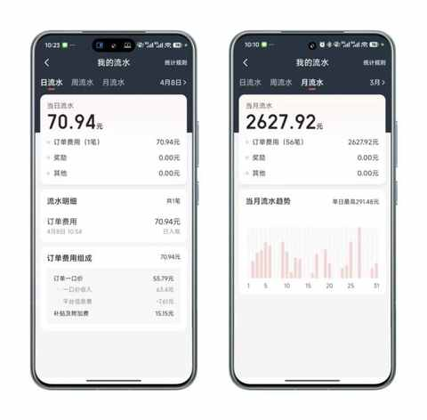
整个 3 月份，出车 20 天，完成 56 单，流水为 2627 元，如果扣除掉高速费用流水接近 2500 元，每单均价为 44.6元。
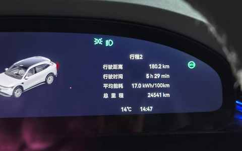
大致情况如下：
- 出门时间：8点30到9点
- 兼职时长：单次4-6小时
- 里程范围：100-200km
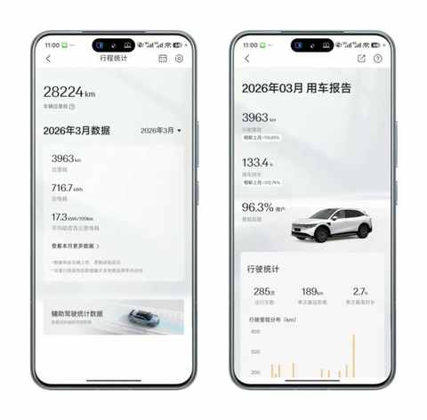
兼职开车送货的 7 个真相
有许多感受，在刚开始送货的时候是模糊的，通过一段时间的积累才能逐步显现，然后变得清晰起来。
一、自身 权益必须自己主张
如果送货是一场游戏，最核心的两个东西是空间和时间。
车内空间决定能放多少货，时间决定在出车后能跑多少单，这两项直接关系到当天的流水。收货和送货的过程中，必然遇到的要等、偶尔需要搬货卸货、超重、放倒后备箱等情况。
如果遇到需要主张自己权益的时候，和我一样期待对方先开口，那必然会和我一样，拉不少超重的货，而且在对方搬货的时候主动会搭把手。
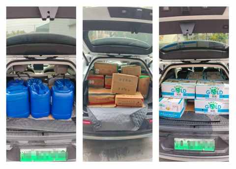
这种时候，按照app 里面的规则，作为司机可以选不拉这趟货但要承担往返的时间损耗，也能和货主说明清楚原有，要加钱才能拉。
如果不主张自己的权益，表明态度，只会让被占便宜成为常态。
吃亏不是福，哑巴亏吃多了只会给自己添堵， 老实人必然被欺负！ ！
自身权益这根弦必须时刻绷紧，要养成主张权益的习惯和意识。
二、出车后，便成为paly的一环
随着兼职司机的变多，发单人结合平台算法给到的单价呈下降趋势， 大部分的单子单价都在 50 元以下。
15km以内的基本在30 元以下，如果计算上取货的距离和等待时间，折合每公里在 1-1.2 元，折合时薪在 20-30 元。
司机的收入与付出相比并不对等，在不计算车辆损耗的情况下。时薪都是偏低的，如果再计算上可能的损耗那就更低了。
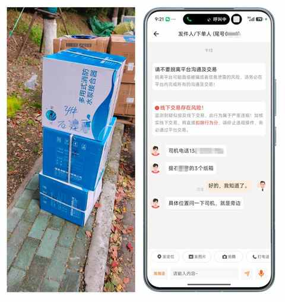
作为司机，出车接上单 ，便成为串联起发货方和收货方的关键一环，由此也成为整个 play 的一环。
三、 观察真实世界如何运行的契机
电子书在将来有可能替代实体书，但网络再发达也无法取代真实的物理世界。
送货的时候，能去到日常不会去的地方：
- 禁毒所
- 农产品批发市场
- 汽配城
- 五金城
- 各类仓库
- 各种园区
- 各种工厂
- 新建中的小区
- 郊区的村里面
- 大学校园
- 商场的卸货区
- 物流园
- ......
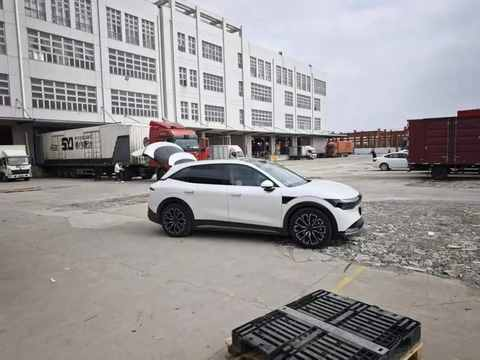
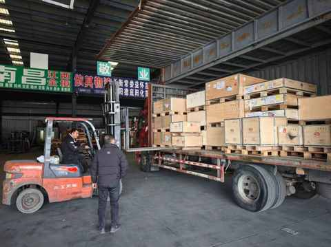
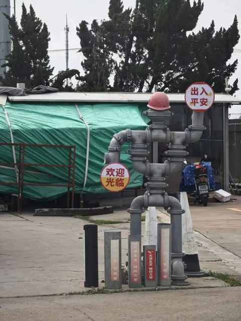
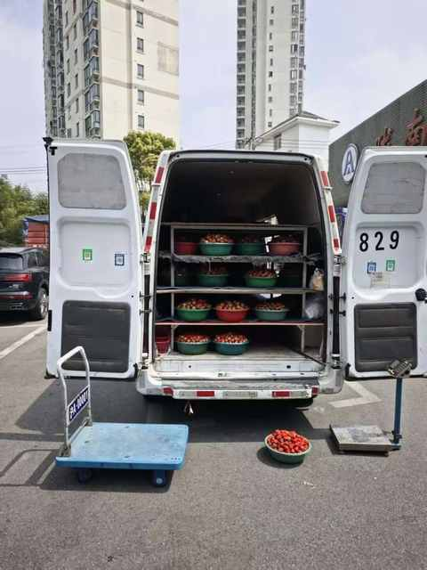
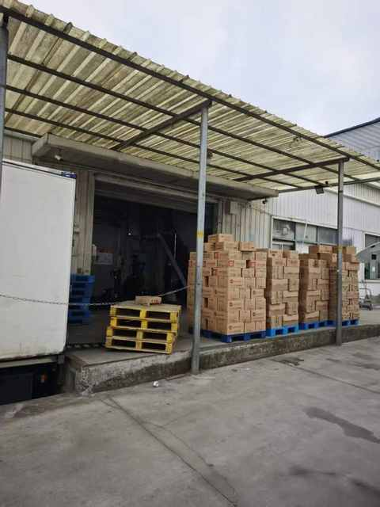
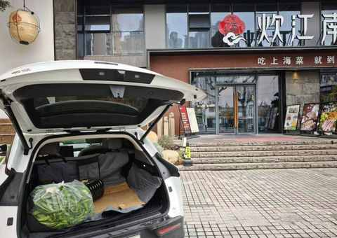
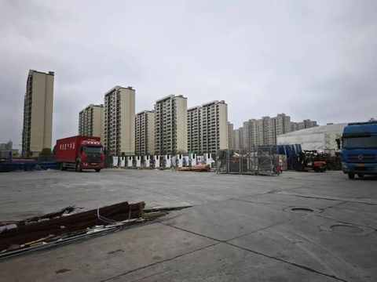
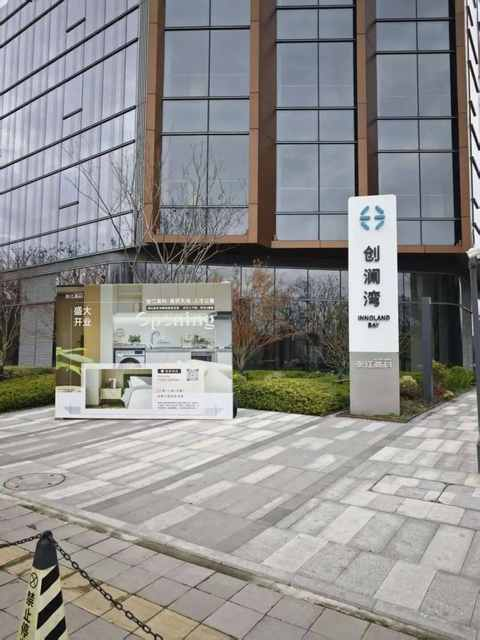
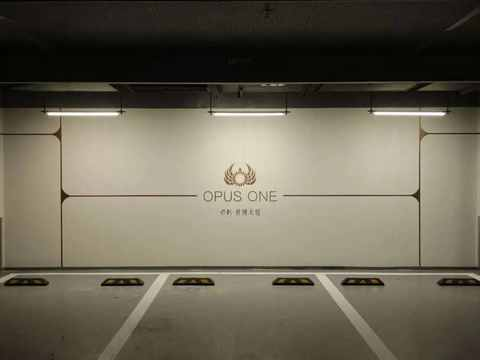
有几个典型的单子，能经常遇到：
- 从仓库拉菜和油，送到某个饭馆
- 从批发市场拉水果，送到某个超市
- 从五金城拉装修材料，送到某个新建中的小区
- 从物流园拉纯净水，送到某个园区
- ……
作为劳动参与者之一，这个 观察的 视角的是无可替代的，而且能获取到一手信息。
送货，绝对是一个观察真实世界如何运行的契机。
四、要 接受随机性
因为是抢单制，每一单都充满随机性。
- 能否抢单成功？
- 货具体是什么？
- 位置在哪？
- ……
唯一能做的是：随机而动，见机行事。
五、秒变赶时间的人
和送外卖不同的是，其实开车送货没有那么赶时间。
但一抢到单子后，心态会产生微妙的变化，会不由自主的想快点去拉货，最好赶在系统建议的时间之前到。
到了之后，快速把货装上车拍照，即刻出发去收货点，把货送到后又趁着对方卸货的间隙抢新的单子。
所以，在整个送货的过程中，秒变为一个赶时间的人，一个赶时间的司机。
辅助驾驶完全想不起来去用，除非长时间堵车的时候用用。
另外需要谨记的是，再赶时间，也要在 遵守交通规则的基础上做到安全驾驶！
六、平台在去责任化
有一些事情是平台必须做到的，但平台或是有意或是无意，并没有做好。
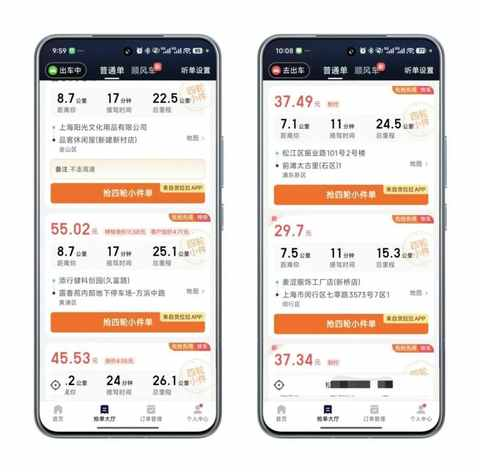
如上图所示，对于抢单的司机来说，完全是盲盒，只能根据地址借助已有的经验去推测货物可能是什么，是多大的物件。
常寄快递的都知道，不仅是实名制，而且在下单的时候必须注明具体的物品类型、重量、体积等关键信息。
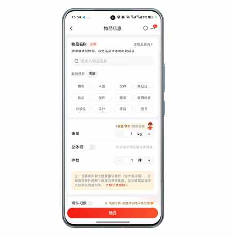
借鉴寄快递的逻辑，平台完全可以要求发货方写清楚物品信息，甚至附上物品照片，在抢单前就让司机对需要运送的货物有明确的认识。
平台把关键信息模糊了，让 发货方和司机去博弈，这是妥妥的去责任化，因为在博弈的过程中，唯有平台是始终获益的一方。
七、体力劳动让人踏实
虽然送货的时候，一出车便是 4-6 个小时，但回来后只是有点累但并不疲惫，吃完晚饭后会保持跑步。
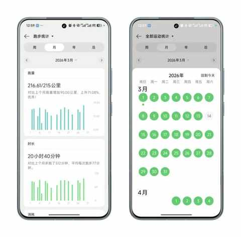
某天晚上没有出去跑步，翻出来去年听播客买的一本书《跑外卖：一个女骑手的世界》，没想到跑外卖和送货有不少相似之处。
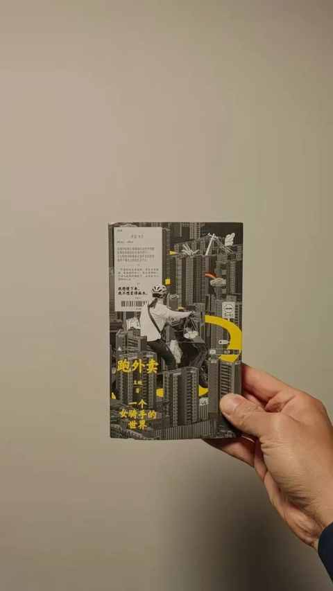
尤其是这段关于 “ 踏实 ” 的描述，极其敏锐且精准，和我开车送货时候的心态一模一样。
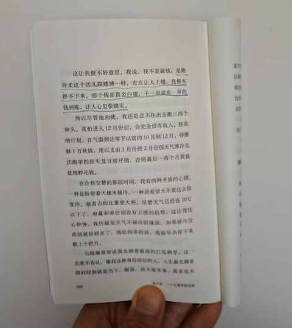
体力劳动可能不够体面，不过这种踏实感无可替代！
结语
作为 一个在 2012 年毕业，一直在互联网行业的中年人而言，对真实社会的了解十分有限，想象和现实存在一定的偏差。
在送货的过程中，能逐步 get 到真实的社会是什么样的，逐步缩小和修正 想象和现实的偏 差。
开车送货的20 天，无疑是我这个中年人的一堂姗姗来迟的社会实践课……